Рив'єра-Майя: Канкун, Плая і Тулум
Як влаштовані Канкун, Плая-дель-Кармен, Тулум і resort-зони — карта, яку варто прочитати до вибору готелю.
Усвідомлений вибір напрямків, готелів і формату відпочинку — без помилок і переплат.
Обрати країну →Три принципи, які допомагають обирати відпочинок усвідомлено.
Шукаємо повторювані скарги та збіги у відгуках, а не орієнтуємось лише на загальний рейтинг.
Оцінюємо рельєф, відстань до пляжу та реальне розташування готелю через карту та фото гостей.
Перевіряємо податки, курортні збори та умови скасування, щоб бачити реальну ціну відпочинку.
Зараз головний фокус — Мексика, а Єгипет і Туреччина залишаються як додаткові розділи
Гіди по курортах та готелях Мексики
Канкун, Плая-дель-Кармен і Тулум
Планування подорожі без помилок бронювання
Гіди по курортах Червоного моря
Перельоти, готелі та підготовка до поїздки
Курорти, пляжі та практичні поради
Гіди по Стамбулу та морських курортах
Райони, готелі та планування подорожі
Розумний вибір курорту та локальні поради
Уперше на Рив'єрі-Майя? Спочатку прочитайте хаб — він розкладає всі гайди за рішеннями, які ви ухвалюєте. Потім оберіть точку старту нижче.
Відкрити хаб «Рив'єра-Майя» →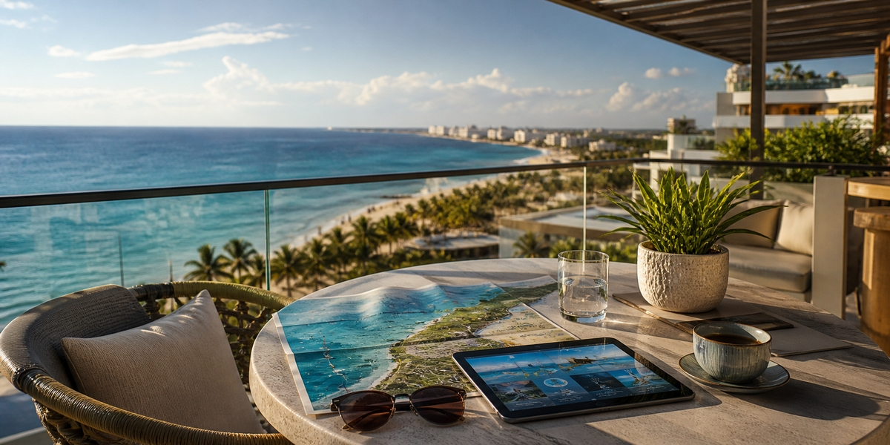
Як влаштовані Канкун, Плая-дель-Кармен, Тулум і resort-зони — карта, яку варто прочитати до вибору готелю.
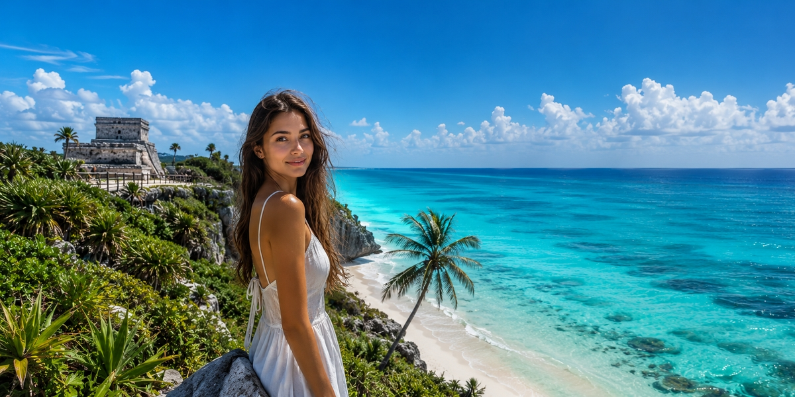
Чесний розбір з акцентом на рішення: куди поїхати в першу карибську пляжну поїздку і кому підходять Канкун, Рив'єра-Майя, Тулум і Пунта-Кана.
Перед бронюванням: район, тип пляжу, відгуки, реальна фінальна ціна, номер, формат курорту й червоні прапорці скасування.
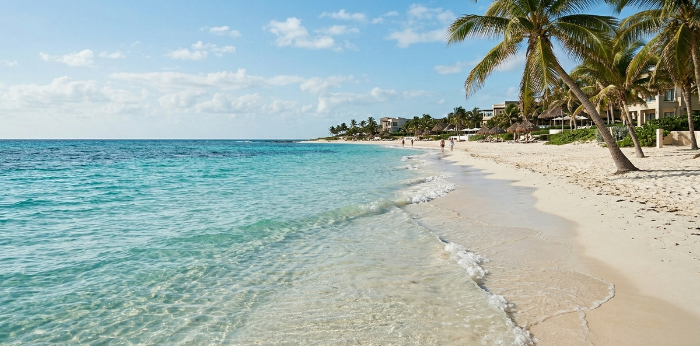
Сухий сезон, ціни, натовпи й саргасум за місяцями — найкращий час для новачків, сімей і бюджетних поїздок.
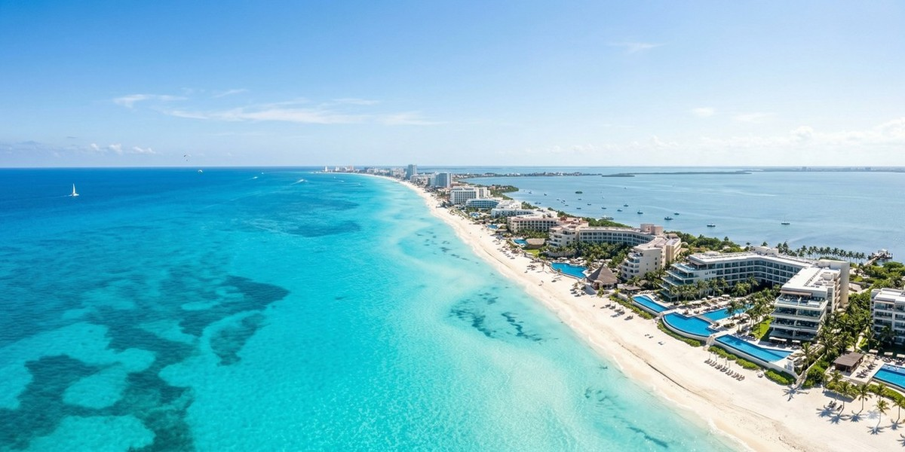
Реалістичний бюджет на 2026 рік у трьох форматах — переліт, готелі, їжа й приховані витрати.
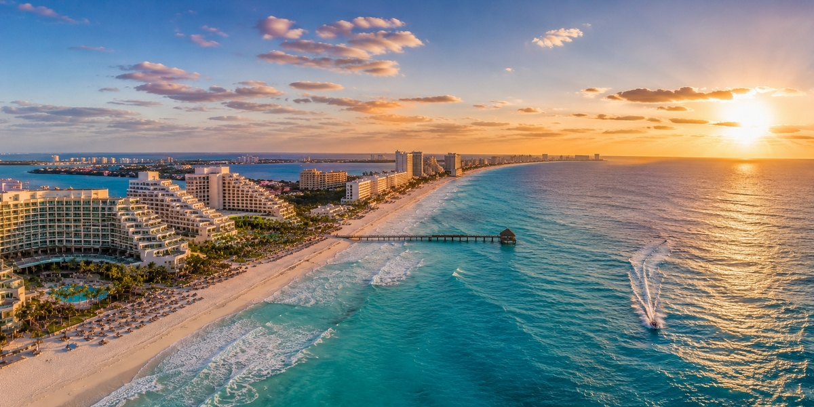
Що насправді означають попередження США та Канади, які щоденні ризики важливіші за все і як уникнути рідкісних проблем у туристів.
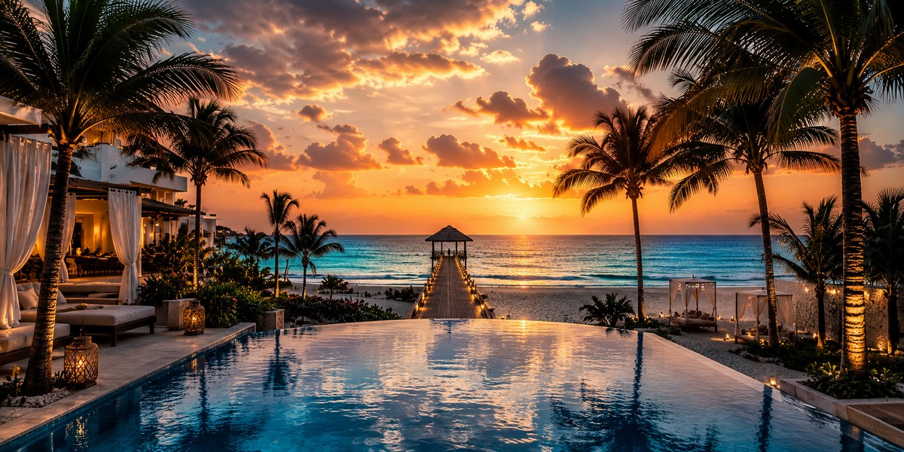
Оберіть курорт лише для дорослих у Плая-дель-Кармен за зоною, рівнем шуму, пляжем і можливістю гуляти пішки: центральні варіанти, тихий Playacar або відокремлений бутик-готель на півночі.
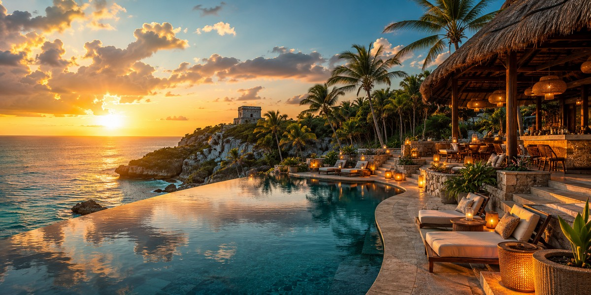
Обирайте бутик-готель у Тулумі з урахуванням пішої доступності, кондиціонерів, шуму від авеніди, доступу до сенотів та чесних компромісів без машини замість завищених цін Beach Zone.
Обираємо тихий готель «лише для дорослих» на північ від Канкуна за рівнем спокою, пляжем, трансфером та усамітненістю: Playa Mujeres, Costa Mujeres або більш жвава Hotel Zone.
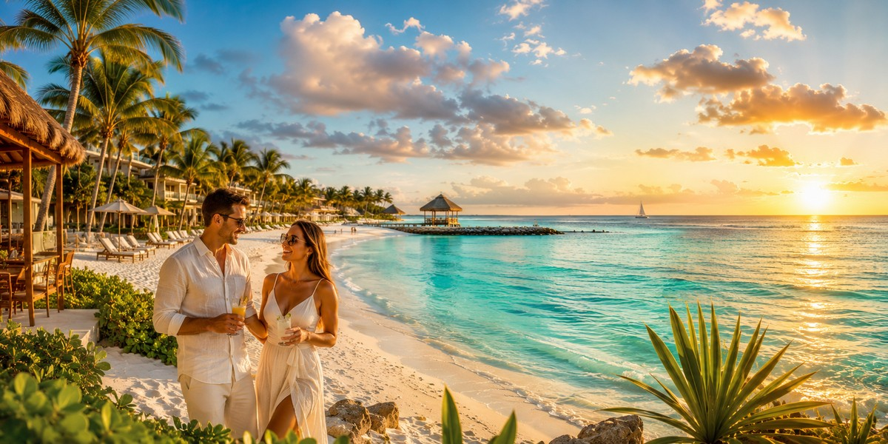
Знизьте ймовірність зустрічі із саргасумом залежно від зони: Playa Mujeres, захищена північна частина Hotel Zone та захищений рифами Пуерто-Морелос, а також курорти, які найкраще доглядають за своїми пляжами.
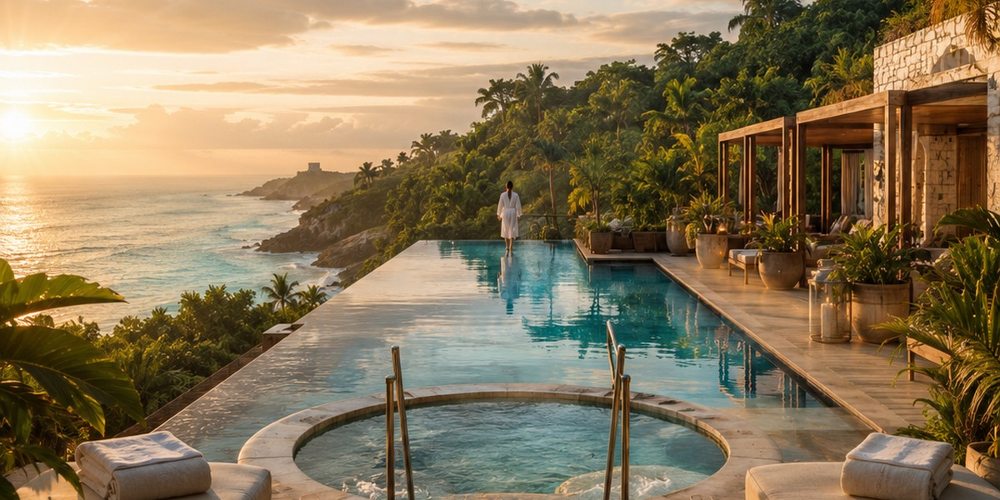
Реальні ціни на day pass у спа-готелях Канкуна та йога-ретрити в Тулумі (2026). Дізнайтеся про приховані витрати та як обрати велнес-формат у Мексиці.
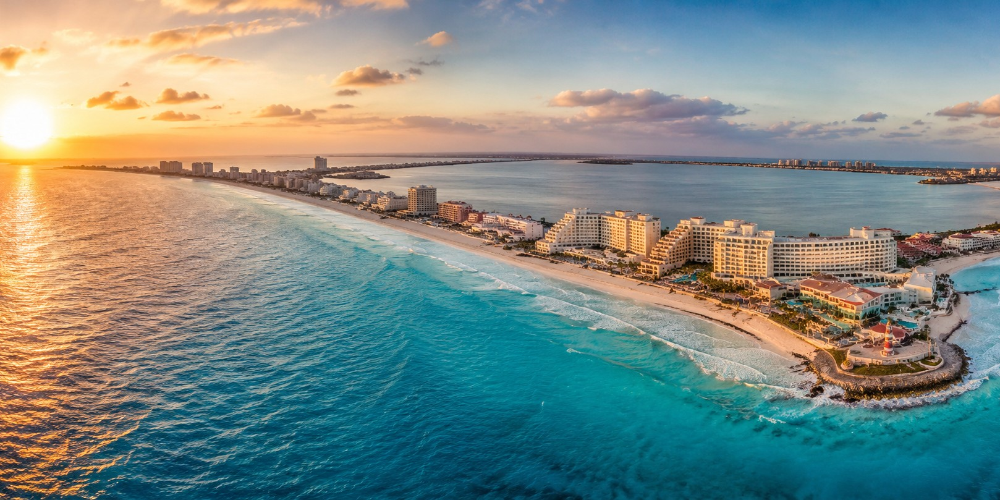
Почніть звідси. Усі гайди про Канкун і Рив'єру-Мая, відсортовані за рішенням, яке ви ухвалюєте, — де зупинитися, скільки коштує, коли їхати і що пропустити.
Тусовочна Плайя-дель-Кармен, тихий романтичний Канкун тільки для дорослих або бутиковий Тулум: виберіть курорт за атмосферою, районом і гостинністю.
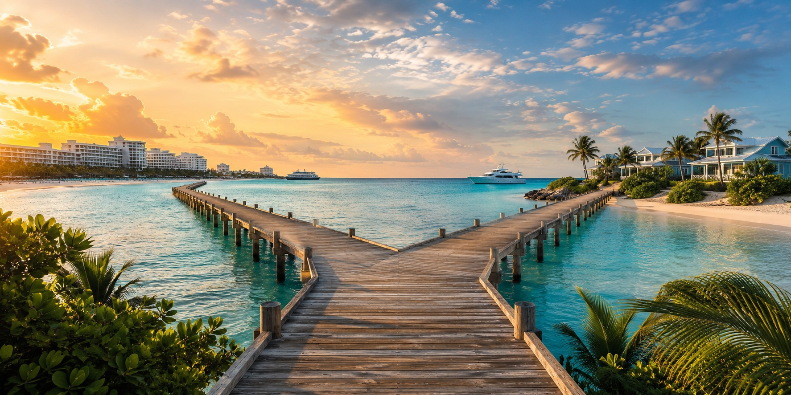
Летіти ближче чи отримати більше за свої гроші? Практичне порівняння часу в дорозі, пляжів, «все включено» та загальних витрат для вибору ідеальної карибської поїздки.
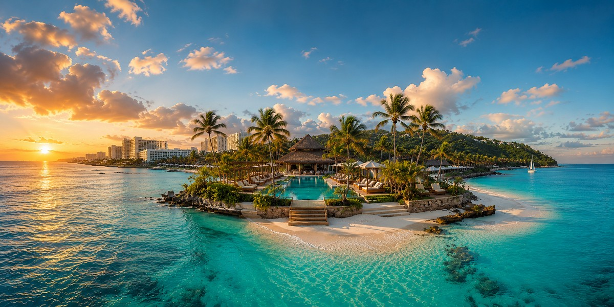
Зручний курорт чи занурення в культуру? Практичне порівняння пляжів, безпеки, «все включено», їжі, авіаперельотів та бюджету для вибору між Канкуном та Ямайкою.
Travel Radar LK — незалежний проєкт для тих, хто хоче планувати подорожі усвідомлено. Головний фокус зараз — Мексика і Кариби, а Єгипет і Туреччина залишаються як додаткові розділи. Тут зібрані практичні статті, порівняння локацій і чесні travel-розбори без зайвого шуму.
Якщо десь на сайті є партнерські посилання, ми позначаємо це прямо. Докладніше про проєкт →